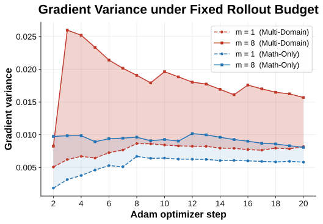
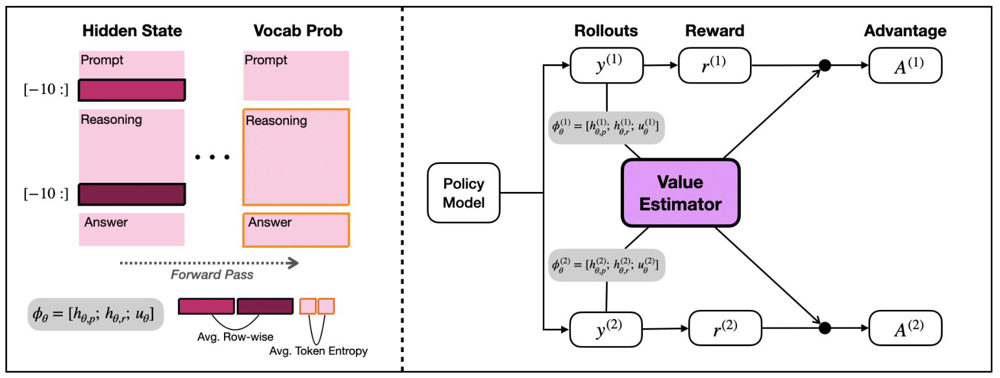
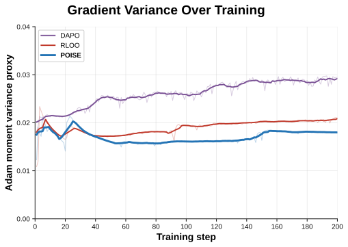
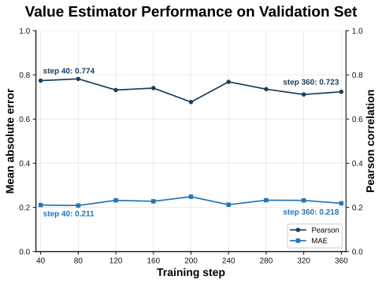

No separate critic model
Instead of training another language-model-sized network, POISE uses the actor's internal states.
Accepted to NeurIPS 2026
Reinforcement Learning with Value Estimation from Actor’s Internal States
*Equal contribution. †Corresponding author.
Updated for arXiv v3 · October 1, 2026 revision
POISE uses a lightweight probe over the actor's internal states to estimate a value baseline. Two independent rollouts supply each other's baselines, preserving the unbiased policy-gradient estimator. Across six-domain RL training, POISE improves the overall benchmark average on Qwen3-4B and OLMo-3-7B-Instruct-DPO.
Reinforcement learning with verifiable rewards trains language models from outcome feedback, such as whether a final math answer is correct. To turn those raw rewards into useful policy-gradient updates, RL methods usually subtract a baseline, so the update reflects whether a response did better or worse than expected for the prompt. GRPO estimates this baseline from multiple responses to the same prompt. Under a fixed rollout budget, larger groups leave fewer distinct prompts in each batch. PPO instead trains a separate policy-scale critic. POISE learns a baseline from the actor's hidden states and token entropy, using two rollouts per prompt and updating a small probe alongside the policy.
Introduction
Stable multi-domain RL needs both a reliable baseline and diverse prompts in each batch. With the total rollout budget fixed, more responses per prompt reduce prompt diversity. POISE combines a learned baseline with just two rollouts per prompt.
Instead of training another language-model-sized network, POISE uses the actor's internal states.
With the same rollout budget, POISE uses two responses per prompt, versus eight for the DAPO baseline.
The estimator is updated as the policy changes, using current and recent rollouts.
Let B = n × m be the total rollout budget: n prompts with m responses each. For a fixed policy and prompt-specific baseline, the batch gradient covariance is
Σw and Σb are the within-prompt and between-prompt covariance components. The within-prompt term stays fixed while the between-prompt term scales with m. This isolates the effect of rollout allocation with the baseline held fixed. Section 2.2.

Preliminary
Before using internal states inside RL training, POISE first tests whether they can support prompt-level value estimation. The comparison spans five datasets and four policy backbones, including GPT-OSS-120B. The figure below shows Qwen3-4B on DAPO-Math.

The internal-state probe reaches Pearson r = 0.870 and MAE = 0.141 on the preliminary benchmark, indicating that verifier-reward information is accessible from the actor's own forward-pass signals.
The comparison critic is finetuned from Qwen3-4B, but reports r = 0.676 and MAE = 0.262 in the same setting. This critic reads the prompt alone; the probe also observes generated trajectory features. Both use the same reward-labeled training data.
Method
A baseline derived from the same response can bias the policy gradient. POISE predicts each response's baseline from the other independently sampled response. The probe is trained against rewards from other rollouts, so its target is expected prompt-level reward.

The old policy samples two independent responses for each prompt.
Mean-pool the final prompt and reasoning token states; average token entropy separately over all generated, reasoning, and answer tokens.
Each response subtracts a value estimated from the other response, preserving independence.
Compute baselines before fitting on the current batch. Use the fixed advantages in a PPO-style clipped policy update; fit the ridge probe on paired-rollout rewards and recent trajectories.
Results
On the six-domain GURU training corpus, POISE achieves the highest overall benchmark average among the main baselines on both backbones: 1.35 points above DAPO on Qwen3-4B and 1.96 points on OLMo-3-7B-Instruct-DPO.
Training uses 92K verifiable prompts with an equal compute budget across methods. Evaluation covers the six training domains, plus LiveBench and instruction following. Checkpoints are selected on the validation split. POISE and RLOO use two rollouts per prompt; DAPO uses eight.
Overall average across 17 benchmarks (0–100 scale).
Overall average across 17 benchmarks (0–100 scale).
All bars use the same 0–100 scale. Source: Table 1.
Scores reproduced from Table 1. The overall score averages all 17 benchmarks; each benchmark retains its own scoring rule. AIME uses Avg@32. Bold marks the highest score within each backbone, including ties. Scroll horizontally on small screens. See the evaluation protocol.
| Domain | Benchmark | Base | RLOO m = 2 | DAPO m = 8 | POISE m = 2 |
|---|---|---|---|---|---|
| Code | HumanEval | 87.20 | 93.90 | 95.73 | 94.51 |
| Code | LiveCodeBench | 22.58 | 30.82 | 24.73 | 35.13 |
| Code | MBPP | 80.20 | 83.40 | 85.00 | 85.60 |
| Logic | ARC-AGI-1 | 2.25 | 3.50 | 3.50 | 3.50 |
| Logic | Zebra Puzzle | 12.02 | 42.39 | 43.77 | 41.05 |
| Math | AIME(avg@32) | 18.30 | 38.44 | 44.90 | 43.44 |
| Math | MATH500 | 82.40 | 90.80 | 92.80 | 92.00 |
| Simulation | CodeIO | 11.00 | 13.50 | 15.50 | 17.50 |
| Simulation | CRUXEval-I | 87.00 | 86.12 | 88.00 | 88.75 |
| Simulation | CRUXEval-O | 87.13 | 87.12 | 80.88 | 87.62 |
| Science | GPQA Diamond | 42.93 | 54.04 | 54.55 | 56.06 |
| Science | SuperGPQA | 36.50 | 41.10 | 43.40 | 44.30 |
| Tabular Reasoning | FinQA | 46.05 | 44.78 | 44.50 | 45.78 |
| Tabular Reasoning | HiTab | 65.00 | 72.10 | 71.50 | 73.40 |
| Tabular Reasoning | MultiHiertt | 49.40 | 50.60 | 51.49 | 52.08 |
| LiveBench | LiveBench | 39.59 | 45.78 | 45.20 | 45.35 |
| Instruction Following | IFEval | 83.18 | 80.78 | 79.30 | 81.70 |
| All benchmarks | Average | 50.16 | 56.42 | 56.75 | 58.10 |
| Domain | Benchmark | Base | RLOO m = 2 | DAPO m = 8 | POISE m = 2 |
|---|---|---|---|---|---|
| Code | HumanEval | 15.24 | 87.80 | 89.63 | 91.46 |
| Code | LiveCodeBench | 6.81 | 32.62 | 25.81 | 30.82 |
| Code | MBPP | 53.00 | 67.20 | 68.80 | 69.60 |
| Logic | ARC-AGI-1 | 1.00 | 2.25 | 1.75 | 2.25 |
| Logic | Zebra Puzzle | 18.06 | 24.37 | 28.53 | 31.90 |
| Math | AIME(avg@32) | 18.33 | 33.54 | 33.85 | 35.83 |
| Math | MATH500 | 78.20 | 88.80 | 91.40 | 92.20 |
| Simulation | CodeIO | 10.50 | 19.00 | 16.00 | 20.00 |
| Simulation | CRUXEval-I | 80.12 | 75.75 | 70.38 | 75.00 |
| Simulation | CRUXEval-O | 49.12 | 79.75 | 79.62 | 80.88 |
| Science | GPQA Diamond | 40.40 | 44.44 | 42.42 | 47.98 |
| Science | SuperGPQA | 26.30 | 30.80 | 30.30 | 31.40 |
| Tabular Reasoning | FinQA | 28.61 | 34.97 | 34.79 | 38.96 |
| Tabular Reasoning | HiTab | 36.10 | 56.50 | 57.60 | 58.00 |
| Tabular Reasoning | MultiHiertt | 20.83 | 32.44 | 28.87 | 31.55 |
| LiveBench | LiveBench | 30.18 | 34.95 | 36.59 | 33.54 |
| Instruction Following | IFEval | 78.56 | 76.34 | 78.93 | 77.26 |
| All benchmarks | Average | 34.79 | 48.32 | 47.96 | 49.92 |


Analysis
Controlled ablations test the input features and cross-rollout construction. Additional experiments compare POISE with token-level PPO and assess value prediction across domains and model scales.
Online analyses evaluate the estimator every 40 training steps against empirical Avg@8 values from the current actor checkpoint, testing whether it remains useful as the policy changes.
Held-out value prediction spans math, coding, tool calling, and instruction following on four backbones, including GPT-OSS-120B. The probe improves MAE in 16 of 20 model–dataset pairs and Pearson correlation in 18 of 20.
The linear ridge probe matches or exceeds the tested MLPs in Pearson correlation, although some MLPs have lower MAE. Layer and pooling-window ablations show that value prediction is not confined to a single extraction setting. Extraction ablations; probe architectures.
On Qwen3-4B, reasoning states and entropy are more predictive than prompt states alone. Combining the three gives the lowest MAE and highest correlation in this ablation. Response length is a weaker predictor. These are held-out value-prediction scores, separate from downstream RL accuracy.
| Probe input | MAE ↓ | Pearson r ↑ |
|---|---|---|
| Prompt hidden states only | 0.234 | 0.569 |
| Reasoning hidden states only | 0.132 | 0.821 |
| Mean entropy only | 0.152 | 0.780 |
| Response length only | 0.251 | 0.494 |
| Full estimator | 0.126 | 0.838 |
Evaluated against empirical Avg@8 values. Table 2.
Higher is better. Qwen3-4B value prediction across RLVR domains.
Lower is better. All bars use a 0–0.5 scale.
In controlled Qwen3-4B math training, full POISE reaches 50.1% Avg@32 across seven benchmarks, versus 40.7% for the same-rollout variant and 47.5% for a prompt-only estimator. Both variants use one rollout per prompt; full POISE uses two. Table 3.
On the main multi-domain suite, POISE scores 58.10 versus PPO's 57.24 on Qwen3, and 49.92 versus 49.33 on OLMo. PPO uses a separate full-parameter token-level critic and one rollout per prompt. PPO is stronger in some individual domains. Table 11.
Value-prediction charts above: Qwen3-4B results from Table 10. Figures are reproduced from Choi et al., arXiv v3 under CC BY 4.0.
Scope. The experiments use fixed compute budgets; behavior over substantially longer training horizons remains untested. The estimator predicts sequence-level value. Token-level credit assignment, non-verifiable rewards, and long-horizon agentic tasks are future directions. Limitations.
BibTeX
NeurIPS 2026 citation. The arXiv link provides access to the paper.
@inproceedings{choi2026poise,
title = {Your Language Model is Its Own Critic: Reinforcement Learning with Value Estimation from Actor's Internal States},
author = {Yunho Choi and Jongwon Lim and Woojin Ahn and Minjae Oh and Jeonghoon Shim and Yohan Jo},
booktitle = {Advances in Neural Information Processing Systems},
year = {2026},
url = {https://arxiv.org/abs/2605.07579}
}